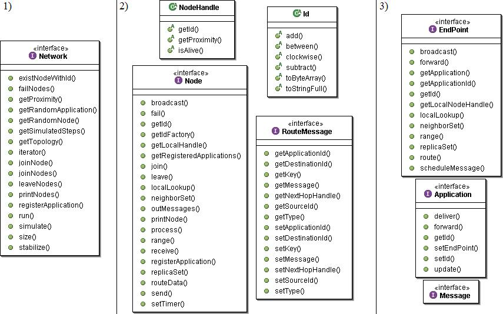
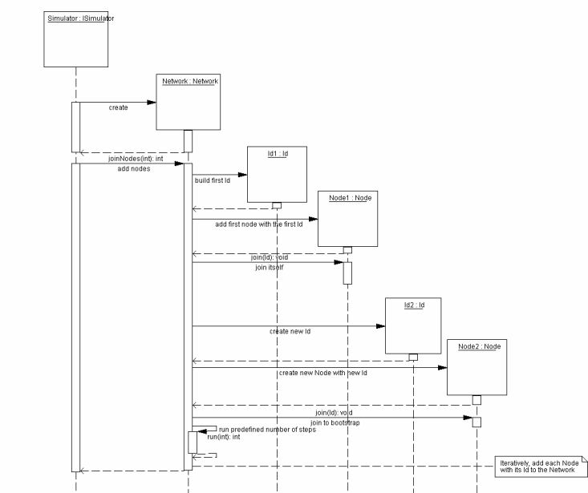
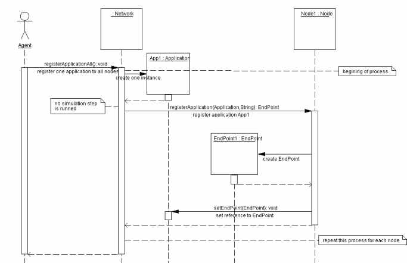

An Overlay Network Simulation Framework
An Overlay Network Simulation Framework |
| Last Updated: 6 April 2005 |
Developer's GuidePlanetSim’s architecture comprises three main extension layers constructed one atop another. As we can see in the next figure, overlay services are built in the application layer using the standard Common API façade. This façade is built on the routing services offered by the underlying overlay layer. Besides, the overlay layer obtains proximity information to other nodes asking information to the Network layer.  We propose a novel service to be supported by overlay simulators: a façade API to develop overlay services and applications on top of existing overlays. This API is based on the proposed Common API (CAPI) for structured Peer-to-Peer overlays. The main motivation for this decision is the plethora of applications and services that can be built on top of structured overlays. Towards a Common API for Structured Peer-to-Peer Overlays In this paper, we describe an ongoing effort to define common APIs for structured peer-to-peer overlays and the key abstractions that can be built on them. In doing so, we hope to facilitate independent innovation in overlay protocols, services, and applications, to allow direct experimental comparisons, and to encourage application development by third parties. 1) Network LayerThe Network layer dictates the overall life cycle of the framework by calling the appropriate methods in the overlay’s Node and obtaining routing information to dispatch messages through the Network. As we explain later, the Network layer can be implemented either by the NetworkSimulator or NetworkWrapper. Developers can thus transition from simulation to experimentation environments in a transparent way. In the next figure, we can see a network creation, where the simulator constructs all nodes and joins these on the new network.
 An another form to create a network is with an event file. You have write an event file with the next event format :
at time [JOIN|LEAVE|FAIL] PARAM0 [PARAM1] NUM_EVENTS
Samples:
at 3 JOIN 32342322 32342322 1
At time 3, a new node with id 32342322 joins using itself as bootstrap, one time.
at 14 JOIN 22333564 32342322 1
At time 14, a new node with id 22333564 joins using the existing node 32342322 as bootstrap, one time.
at 400 LEAVE 32342322 1
At time 400, the node with id 32342322 leaves.
at 502 FAIL 22333564 1
At time 502, the node with id 22333564 crashes.
Also you can generate automatic join event file using the script genfile
>> cd bin >> genfile name_file topology num_nodes delay_steps
name_file : name of the output file to generate
topology : choose a (R)andom or a (D)istributed scheme
num_nodes : total number of nodes
delay_steps : number of steps between two joins
Example : >> genfile test_join1000d.txt D 1000 3
2) Overlay Layer : Protocol ExtensionThe main conceptual entity and obvious hotspot of this layer is the Node. A node contains incoming and outgoing message queues and methods for sending and receiving/ processing messages. Each particular node must then include a complete behaviour or protocol that will dictate which messages to send in specific times and how to react to incoming messages. Furthermore, to create a new overlay, the embedded protocol must define its own messages with specific information to arrange the overlay. This also implies that developers should be able to define their own message types (hotspot).
At the overlay layer, the communication is bidirectional with both the application and network layers. With the application layer, the Node notifies the Application of received messages (upcalls) and it is invoked by the EndPoint façade in order to route messages or obtain routing state information (downcalls). Both the EndPoints and the Nodes exchange RouteMessage types. A RouteMessage contains source and target identifiers, as well as information regarding the next hop in the overlay. It is also possible to modify the next hop route at the application or overlay layers in order to alter the routing scheme.
With the network layer, the Node hotspot provides the template methods (join, leave, fail and process) that determine the life’s cycle of every node. The method process contains the specific protocol each node maintains to create the overlay. Besides, every node has an incoming and an outgoing message queue; incoming messages are parsed every step in the process method, and the send method moves messages to the outgoing queue.
To identify nodes in the overlay, the simulator employs three main entities: Id, IdFactory and NodeHandle. Ids are custom number types of 32 to 160 bits that identify nodes in the overall key based routing scheme. The extensible IdFactory permits to define custom Id generation schemes in each overlay. Additionally, NodeHandles contain IP to Id value pairs for each node. Furthermore, a NodeHandle provides a proximity method that queries the Network to obtain network proximity information.
This information is important to design locality sensitive overlays. As we can see, we have many upcalls that define the Node’s life cycle and registering of applications, and only one downcall to query the Network for proximity between Nodes.
You would execute an application than use the overlay likes this example (planet.test.SimTest)
package planet.test; import java.util.Vector; import planet.commonapi.Network; import planet.generic.commonapi.factory.GenericFactory; import planet.simulate.EventParser; import planet.simulate.NetworkSimulator; import planet.simulate.Scheduler; import planet.util.Properties;
/** * This test use the event file "test_join1000d.txt" in the "bin" directory. Shows the time elapsed * for generating the network and its stabilization. Finally, prints all nodes with theirs * information * @author Ruben Mondejar * @author Jordi Pujol */ public class SimTest { /** * Initialize the planet.util.Properties with * ../conf/factories_zero.properties, ../conf/sim.properties, ../conf/chord.properties files, * with a test_join1000d.txt for event file. * Then, it initialize the GenericFactory and starts the stabilization process. * @param args Nothing. * @throws Exception */ public static void main(String[] args) throws Exception { //init context Properties.init("../conf/factories_zero.properties","../conf/sim_simtest.properties","../conf/chord.properties"); GenericFactory.init();
//load events Vector events = EventParser.parseEvents(Properties.eventFile); Scheduler timer = new Scheduler(); timer.addEvents(events); long t1,t2,t3,t4; //actual millis t1 = System.currentTimeMillis(); NetworkSimulator sim = new NetworkSimulator(timer); t2 = System.currentTimeMillis(); Network net = sim.getInternalNetwork(); int steps = net.getSimulatedSteps(); System.out.println("Network creation time ["+(t2-t1)+"] milliseconds for ["+net.size()+"] nodes with ["+steps+"] steps."); //stabilization t3 = System.currentTimeMillis(); sim.stabilize(); t4 = System.currentTimeMillis(); int steps2 = net.getSimulatedSteps(); System.out.println("Simulation time ["+(t4-t3)+"] milliseconds for ["+net.size()+"] nodes with ["+(steps2-steps)+"] steps."); System.out.println("Total time ["+(t4-t1)+"] milliseconds for ["+net.size()+"] nodes with ["+steps2+"] steps."); sim.printNodes(); } } An example of overlay protocol implementation : ChordRecommendation: to understand all about the methods, messages, etc, you must read and think the original protocol of Chord paper. You can find this document in the next link : http://www.pdos.lcs.mit.edu/papers/chord:sigcomm01/chord_sigcomm.pdf
Important Methods
One property in this point is the inversion of control of the framework. The ChordNode is the core of the protocol implementation, but the framework defines flow and the interaction with the Node interface methods and NodeImpl abstract class. Furthermore, follows the stabilization scheme proposed in the paper, therefore we implemented the methods stabilize and fix_fingers.
----------------- All protocols-------------------------- a) join (Id n1)
In this basic method, the node joins in the network since a bootstrap node. The node clears the predecessor reference, and initiate the search of the successor executing the find_successor method.
b) leave ()
Other basic method, the node leaves the network as describes the next scheme. In this scheme, the node only must sends two messages, one for predecessor informing the successor change, and the reverse message to successor, like a unqueue method in the double linked queue.
c) fail()
The same than the previous method but in this case the node don't sends any message and it disconnect directly.
d) process (int actualStep) :
While the simulation is running, the process executes in every step this method. The process method executes the dispatcher to handle all messages.
e) routeData (RouteMessage data)
This method discriminates between direct messages and indirect messages. If the message indicate the destination, a direct shipment takes place, but if the destination is unknown then it finds the next hop following the overlay routing protocol.
----------------- Chord Specific ---------------------- e) stabilize()
Finds the value of the successor, if verifies that is the real successor then sets the new reference and notifies of this to him.
f) fix_fingers()
This method is seemed to the previous method but with the main difference that this method is for all values of the finger table. In every call, finds and verifies one of the all entries of the table.
g) broadcast (RouteMessage data)
This method follows an specific algorism from the paper "Efficient Broadcast in Structured P2p Networks". Link : http://www.sics.se/~seif/Publications/paper3.pdf
Periodic Tasks
When a developer implements a new overlay protocol like Chord (ChordNode), it also needs to define periodic tasks that will send messages to maintain the shared state and to correct its own routing tables. Any overlay simulator must then provide a Timer subsystem enabling this activation of periodic tasks in specific times. This timer subsystem can be extern to nodes or be included in the node contract enabling the activation of tasks: setTimer(task, firsTime, periodic).
In this case, two task are be implemented. The two periodic tasks are the stabilize task and the fix_finger task.
Example :
public class StabilizeTask extends TimerTaskImpl {
public StabilizeTask()
{
/**
Messages
All kind of messages have a few different modes. The three modes are Request, Reply and Refresh mode. The Request mode ever have a response with a Reply messages, however the Refresh message don’t have a response. At last, the Error mode indicates that a sended messages can't arrives to the destination.
3) Application RegisterYou have to implement a main application to execute the simulation. The first step is that your main application extends GenericApp class. The second step is call the super constructor in your constructor because it inicialitzate the framework. And the third step is generate the network and register your application in this. In the example, we do a simple main application where we inicialitzate the network with the config file, generate the network, and register a SimpleApplication. Also executes a simple message sender.
package planet.test.simpledht; import planet.commonapi.Network; import planet.commonapi.exception.InitializationException; import planet.generic.commonapi.GenericApp; import planet.generic.commonapi.factory.*;
public class PeerTest extends GenericApp { /** * Network to contain all nodes. */ private static Network network = null;
/** * Builds a network, following the values of the properties files. */ public PeerTest() throws InitializationException { super("../conf/PEERfactories.properties", "../conf/PEERsim.properties", "../conf/PEERchord.properties"); try { //builds a network with the properties specified at properties network = GenericFactory.buildNetwork(); System.out.println("Network created\n"); network.prettyPrintNodes(); //register to all nodes the application specified at properties network.registerApplicationAll(); System.out.println("Application added\n"); sendMessage(); } catch (InitializationException e) { System.out.println("Occur an exception in initialization of "+ this.getClass().getName() +": " + e.getMessage()); System.exit(-1); } }
/** * Send a Hello World message to the network, getting a radomly existing * SimpleApplication of the network. */ public void sendMessage() { System.out.println("Sending message..."); String messageText = "Hello World!"; PeerTestMessage mesg = new PeerTestMessage(messageText); SimpleApplication app = (SimpleApplication ) network.getRandomApplication(SimpleApplication .applicationId); app.send(messageText, mesg); network.stabilize(); }
/** * Starts the test, building a network following the values of the * properties files and send a simple Hello World message. * @param args Nothing waiting. */ public static void main(String args[]) { try { PeerTest c = new PeerTest(); } catch (Exception e) { e.printStackTrace(); } System.exit(0); } } Once the network overlay is stabilized, you must generate a new instance of the application, for example specifying a concrete node, by the method registerApplication(). At this moment, the node constructs a new EndPoint to give capacity to the new application. All this process must be made for each one of the nodes that conform the network, and will be then when the application totally is registered. 
|
 PLANET Project Page
PLANET Project Page